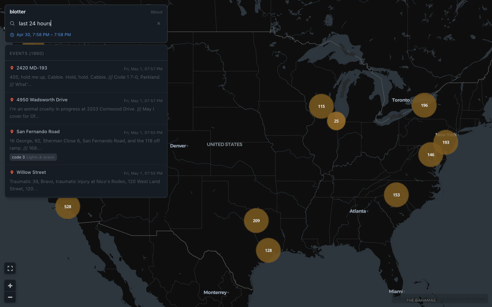

Los Angeles County has six public police scanner feeds streaming around the clock on Broadcastify: LAPD's South, West, and Valley bureaus, the Hotshot channel, LA Sheriff's Multi-Dispatch, and Long Beach PD. Dispatchers call out intersections, addresses, and cross streets buried in a torrent of codes, callsigns, and status updates. Blotter captures all six feeds in real time, transcribes the audio with Whisper, extracts locations from the transcripts, geocodes them to coordinates, and plots the results on an interactive map. From dispatch call to map pin, the entire pipeline runs in about five minutes.
The pipeline
The system is three workers running concurrently: a capture worker, a transcription worker, and a processing worker. They communicate through Redis queues in a linear chain.
The capture worker pulls raw audio from Broadcastify's CDN and chunks it into five-minute WAV segments, uploading each to Google Cloud Storage. The transcription worker picks up those chunks, runs them through Whisper on a GPU, extracts police codes from the text, and writes the transcript to ClickHouse. The processing worker takes the transcript text, runs named entity recognition to find locations, geocodes the results to latitude/longitude pairs, and writes the geolocated events to ClickHouse.
This separation exists because the three stages have different resource profiles. Capture is I/O-bound: streaming audio from HTTP and writing to disk. Transcription is GPU-bound: Whisper's forward pass dominates the latency. Processing is API-bound: waiting on Google's NLP and Places endpoints. Running them as independent workers behind queues means a slow geocoding call doesn't back up transcription, and a Whisper model reload doesn't stall the audio capture. If any stage falls behind, its queue grows and the others keep running.
Capture
Each of the six feeds is an HTTP audio stream at Broadcastify's CDN. FFmpeg connects to the stream, resamples to 16 kHz mono, and writes five-minute WAV segments to disk. When a segment completes, it gets uploaded to GCS and a task is pushed onto the capture queue.
Internet radio streams drop constantly. FFmpeg exits when the connection breaks. The capture worker detects this, waits with exponential backoff starting at 5 seconds and capping at 5 minutes, kills any orphaned FFmpeg processes from previous attempts, and reconnects. After 10 consecutive failures without producing a successful chunk, the backoff grows more aggressive.
Fresh connections to Broadcastify play a 30-35 second station identification clip before the actual scanner audio begins. Without handling this, the first chunk of every reconnection would open with "This is the Los Angeles Police Department South Bureau..." instead of actual dispatch. The capture worker flags the first chunk after each new connection. When the transcription worker sees that flag, it trims the first 35 seconds of audio before feeding it to Whisper and replaces the GCS file with the trimmed version so the stored audio matches the transcript.
Transcription
Whisper large-v3 runs through Faster Whisper, a CTranslate2-based reimplementation that is significantly faster than the original PyTorch model while producing identical output. On an RTX 3090 in float16, a five-minute audio chunk transcribes in about 8-12 seconds depending on how much speech it contains.
Voice activity detection runs as a preprocessing filter. Scanner feeds have long dead-air stretches between dispatches, and running Whisper on silence produces hallucinations: the model invents plausible-sounding dispatch text to fill the gap. The VAD filter, configured with a 500 ms minimum silence duration and 200 ms speech padding, strips silence before Whisper sees the audio.
Each feed gets its own initial prompt, a short text of domain vocabulary that biases Whisper's decoder toward police radio terminology. The default prompt includes terms like "10-4," "code 3," "suspect vehicle," "en route," and "on scene." Per-feed prompt files can override this for feeds with distinct vocabulary.
The harder problem is chunk boundaries. A five-minute segment is an arbitrary cut that can split a sentence in half. When Whisper transcribes two consecutive chunks independently, the last few words of chunk N often repeat verbatim at the start of chunk N+1, because both chunks contain the same speech near the boundary.
The boundary deduplication algorithm compares the tail of the previous chunk's transcript against the head of the current chunk. For overlap lengths from 1 to 20 words, it checks whether the last K words of the previous text match the first K words of the current text. The longest match is stripped from the current output. This is a word-level suffix-prefix overlap check: fast, and effective at eliminating the stutter that would otherwise appear every five minutes in the transcript.
The transcription worker also maintains a rolling buffer of the five most recent transcript texts per feed. This context window is available for downstream stages that need surrounding text to disambiguate a location reference.
Extracting locations from radio chatter
This is the hardest stage in the pipeline. Police radio is not structured data. Dispatchers say things like "we've got a 459 in progress at Florence and Normandie" or "Adam-12, respond to 1800 block of Wilshire" or "suspect vehicle last seen southbound on the 110." The task is to identify which parts of that text are locations and resolve them to coordinates on a map.
The primary extraction uses Google's Natural Language API for entity analysis. The API returns typed entities with salience scores. Entities tagged as LOCATION or ADDRESS are candidate locations. But the raw entity list needs heavy filtering before it's useful.
A skip list catches common false positives. Police radio mentions "Hollywood," "Wilshire," "Newton," and "Harbor" constantly, but these are LAPD division names, not locations being dispatched to. "Adam," "Lincoln," "Mary," and "Boy" are phonetic alphabet designations for unit callsigns. "Roger," "suspect," "victim," "supervisor," and "dispatch" are not places. The skip list contains about 80 entries, accumulated through days of watching the pipeline produce bad geocodes and tracing them back to their source.
Several plausibility filters apply beyond the skip list. Single-word entities without a street suffix (street, avenue, boulevard) are dropped, since they're almost always callsign fragments or common nouns. Bare freeway references ("the 110 north") are filtered because they don't resolve to a point. Entities matching the pattern of an incident number or radio code ("RD-1234," "unit 12A44") are excluded.
Intersection detection is a separate pass over the entity list. When two location-type entities appear within 15 characters of each other in the source text, separated by "and," "at," "&," "/," or a comma, they are combined into an intersection reference. "Florence" and "Normandie" appearing near each other with "and" between them become "Florence and Normandie." This is the most common location format in LAPD dispatch: cross streets identify the nearest intersection to the call.
For transcripts where the NLP API returns no usable entities, a regex fallback scans for patterns that look like street addresses (a number followed by words and a street suffix) or intersection constructs. These are tagged with lower confidence but catch locations the ML model misses.
Ad content is stripped before any extraction runs. Broadcastify intersperses insurance ads, legal services spots, and station promos into the audio stream. A keyword list flags sentences containing terms like "progressive," "geico," "personal injury lawyer," and "free consultation." Once an ad sentence is detected, subsequent sentences are also dropped until one appears with dispatch-like vocabulary: codes, unit designators, or action verbs like "respond" and "en route." If the entire cleaned text contains no dispatch anchors at all, it's treated as a pure ad segment and discarded.
Geocoding
Each extracted location is resolved to coordinates using Google's Places API. The lookup uses Find Place From Text with a rectangular location bias centered on LA County. Without the bias, a query for "Florence and Normandie" could resolve to Florence, Italy.
Two filters run after the API returns a candidate. First, the result must have a place type indicating a road: route, intersection, or street_address. This prevents the geocoder from pinning events to parks, businesses, or landmarks that happen to share a name with something mentioned in dispatch. Second, the coordinate must fall within the LA County bounding box. Anything outside is discarded.
The geocoder uses an LRU cache with 4,096 entries. Police dispatches mention the same intersections repeatedly, and the cache eliminates redundant API calls. For intersection locations, the geocoder tries two query formats ("intersection of X and Y" and "X & Y") before giving up.
Deduplication
Without deduplication, the map fills with clusters of identical pins. A single incident generates multiple dispatch calls, officer check-ins, and status updates, all mentioning the same location within a few minutes.
Deduplication runs at two levels. At the database level, before inserting a new event, the processor queries ClickHouse for any event with the same normalized location name within the last 10 minutes. If a match exists, the new event is skipped. At the batch level within a single transcript, the processor tracks coordinates of events already created from that chunk and skips anything within 0.002 degrees (roughly 200 meters) of an existing pin. This catches repeated mentions of the same intersection with slightly different wording.
ClickHouse and H3
The events land in two ClickHouse tables. scanner_transcripts stores the full transcript text, audio URL, timestamped segments, and extracted police codes. scanner_events stores geolocated events with coordinates, confidence scores, surrounding context from the transcript, and tags.
The events table uses Uber's H3 hexagonal indexing for spatial queries. Each event's coordinates are converted to an H3 index at resolution 9 (hexagons roughly 150 meters across) via ClickHouse's built-in geoToH3 function, stored as a materialized column. The MergeTree ordering key is (toDate(event_ts), h3_index, event_ts), which clusters events by day and spatial cell on disk. Time-range queries with geographic bounds hit only the relevant granules instead of scanning the full table.
The frontend talks to ClickHouse through a Cloudflare Pages Function acting as a SQL proxy. The function validates that incoming queries are read-only (the first keyword must be SELECT, WITH, SHOW, or DESCRIBE), forwards them to ClickHouse over a Cloudflare Tunnel with read-only credentials, and returns the result. The tunnel means ClickHouse doesn't need a public IP or a static address.
The map
The frontend is React 19 with MapLibre GL via react-map-gl on CARTO's dark-matter basemap. Events render as GeoJSON points with source-level clustering that merges nearby points into numbered circles. At zoom level 14, clusters break apart and individual events become visible.
The search bar accepts natural language time expressions. Typing "last 6 hours," "yesterday," or "this morning" parses the input with chrono-node, a natural language date parser, and sets the query time range. Shorthand forms like "last 3h" and "past 30m" hit a faster regex path before chrono runs. Whatever text remains after stripping the time expression becomes an ILIKE filter against the transcript, normalized location, and police code tags in ClickHouse.
Clicking an event on the map opens a detail panel with the full transcript, the extracted location highlighted in context, the feed name, and the timestamp. From the transcript panel, the original audio is available through a player that highlights segments as they play back. Audio files are served through signed GCS URLs that provide time-limited access without exposing the bucket publicly.
Police codes in the transcript (10-codes, California penal codes, and LAPD status codes) are tagged and displayed as expandable chips with human-readable labels. A regex pass over each transcript matches patterns like "code 3" (lights and sirens), "10-97" (arrived at scene), "459" (burglary), and "11-80" (major accident), drawing from a dictionary of about 60 codes.
The map polls for new events every 15 seconds. Relative time ranges ("last 6 hours") update their absolute boundaries on each poll, so the window rolls forward with the clock rather than going stale.
Infrastructure
The backend runs on a RunPod spot instance with an RTX 3090 at $0.25/hour, about $180/month for continuous operation. All three workers run on the same pod under supervisord. ClickHouse and Redis run alongside them, with data persisted to a network volume that survives pod restarts and rebalancing.
The frontend deploys to Cloudflare Pages via GitHub Actions on push. A Cloudflare Tunnel connects the pod's ClickHouse instance to ch.blotter.fm so the Pages Function can reach the database without the pod needing a public IP. The entire system runs for under $200/month: GPU compute, a few dollars of GCS storage for the audio archive, and Cloudflare's free tier for hosting and tunneling. That buys continuous transcription of six scanner feeds, real-time geocoded event mapping, full-text search across every transcript, and audio playback for every dispatch.